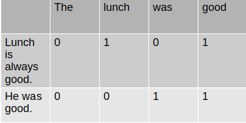
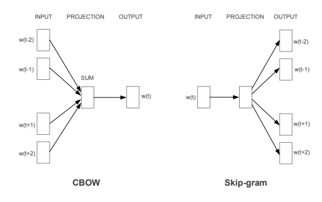
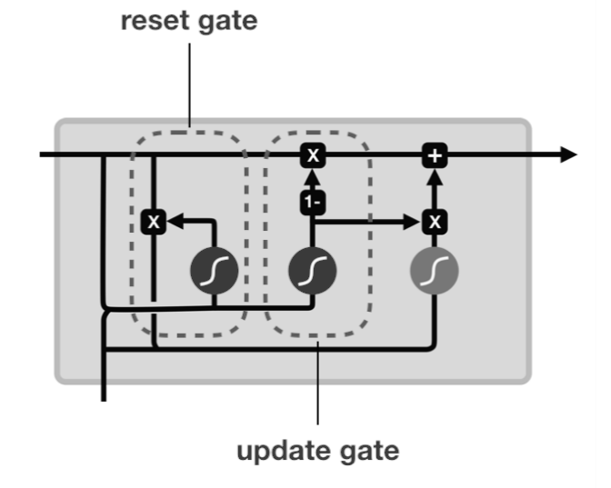
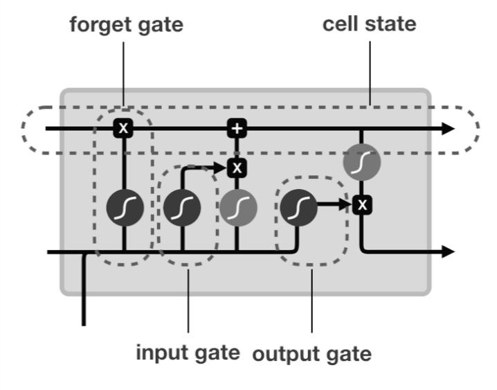

With the availability huge amount of text data, NLP(Natural Language Processing) has been gaining popularity in recent years. In this article, I will be explaining the necessary steps to develop NLP model. The development of the NLP model can be broadly classified into three categories: preprocessing data, generating embedding, and building model.
Let’s dive into these!
1. Data Preprocessing
Data preprocessing is an initial and crucial step in machine learning. It is the process of transforming raw data into a useful and efficient format. Some of the tasks include removing special characters, website links, stop words, performing tokenization, normalization.
Cleaning
In this step, we remove website links, special characters, numbers, emojis. We only want text data.
Tokenization
Tokenization means converting your text/sentences into small units. For instance:
- sentence
jk rowling wishes snape happy birthday magical way
- tokenized sentence
['jk', 'rowling', 'wishes', 'snape', 'happy', 'birthday', 'magical', 'way']]
Normalization
Normalization is the process of converting a word to its root form. For instance: ‘plays’, ‘played’, ‘playing’ all essentially means to play, so we convert these words to ‘play’. It is an essential part of feature engineering where we convert higher dimension features to low dimensional space.
stemming
It is the process of converting word to its non changing form.
processing-->process
natural-->natur
lemmatization
It is the process of converting word to its dictionary form.
better-->good
women-->woman
Stopwords
Stopwords do not add much value to our NLP model. So, we remove all of them. This helps us to make our model more robust.
You can check the list of English stopwords here.
2. Building Embedding
Word embedding is a representation of words where similar words have similar representations in vector space. Here, words are represented as real-valued vectors.
BOW
Bag of Words(BOW) is a technique to convert a word into a vector, based on the frequency of the word. It creates a vocabulary set and captures the distribution of words in each document.

TF-IDF
Term Frequency - Inverse Document Frequency(TF-IDF) is a method of representing word vectors where the words that are unique to each document(instance of corpus) are given higher importance than common occurring words. It is calculated by:
TF-IDF = TF * IDF
where, TF = probability of a word in a specific document
IDF = probability of that word in overall corpus
Word2Vec
Word2Vec is a pre-trained model developed by Google which was trained on 300 million words of news corpus. It was trained using both the CBOW(Continous Bag of Words) and Skip-gram technique. In CBOW, the target word is predicted using context word and in skip-gram, we use target word to predict context word. Word2Vec represents each word in 300-dimensional vector space which helps to catch the subtle relationship between words. Paper

GloVe
GloVe stands for global vectors. It is an embedding technique that uses a co-occurrence(how frequent words appear together) matrix to build word vectors at the global level. Using this sort of matrix effectively captures the meaning of the words but the size of that matrix becomes huge. The GloVe paper addresses this issue by factorizing that matrix to lower dimension. Paper
3. Building Model
Once we have a numeric representation of our data, we should look to build the model. There are many options to choose from. We should always choose according to our problem statement. Some algorithm works well on one set of a problem but poor on other.
Traditional Machine Learning algorithms
The traditional machine learning algorithm like Naive Bayes, Random Forest, Support Vector Machine, XGBoost can also be used in NLP tasks.
Recurrent neural network(RNN)
Recurrent Neural Networks work well with text or sequential data. The vanilla RNN or the advanced form of RNN like LSTM and GRU can be used to train our NLP model. The latter prevents issues like vanishing and exploding gradient.
GRU
Gated Recurrent Unit(GRU) has two gates that are reset gate and update gate. GRU is relatively new and in some cases, performance is as good as LSTM even having such a simple architecture. 
LSTM
Long Short Term Memory(LSTM) has three gates that are input, output, and forget gate. LSTM is still preferred if we need to train our model for longer sequences.

Transformers
Transformers architecture uses attention mechanism to handle long-range dependencies. This architecture was published in the paper Attention Is All You Need.
Also, I have written whole about this architecture here.